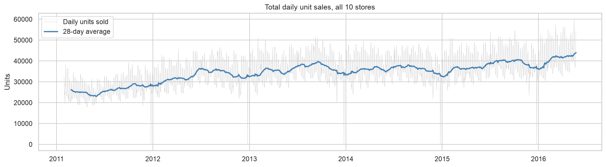
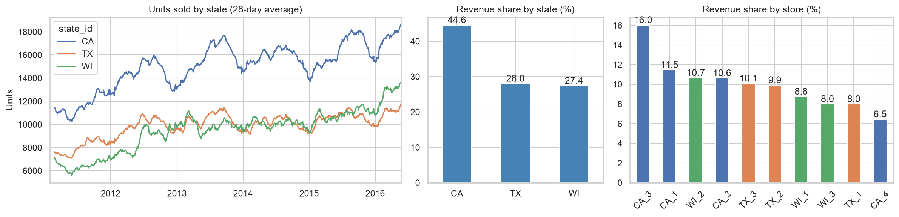
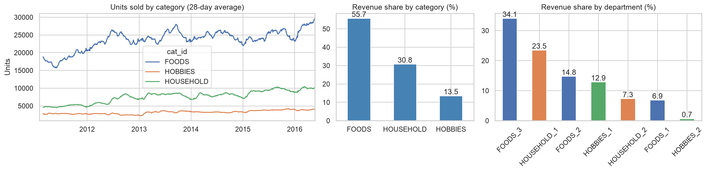
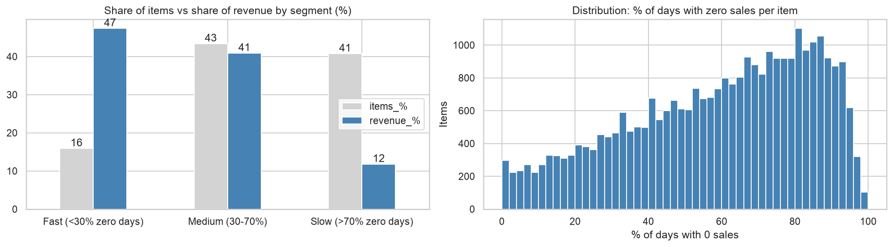
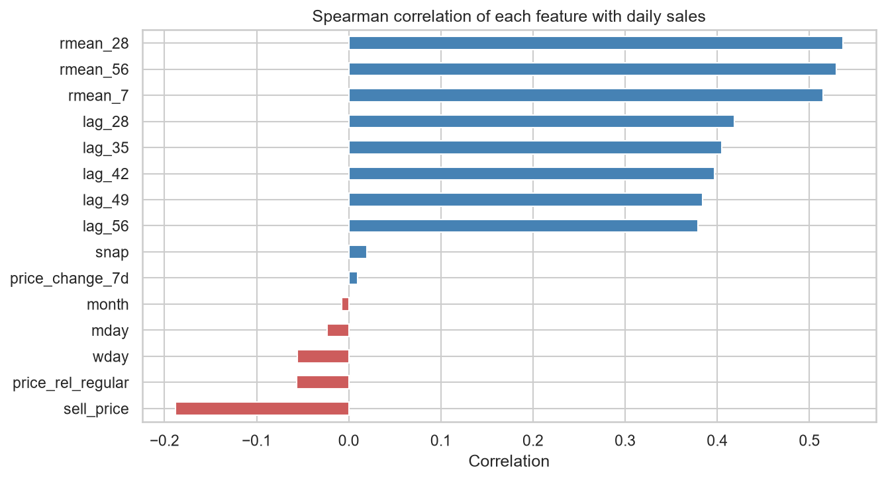
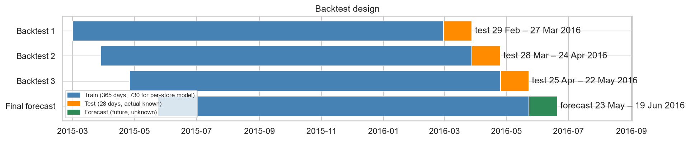
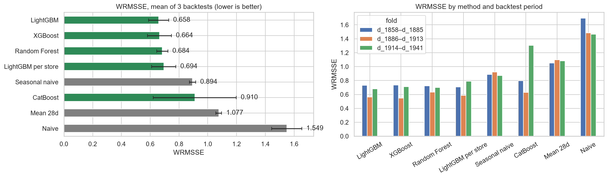
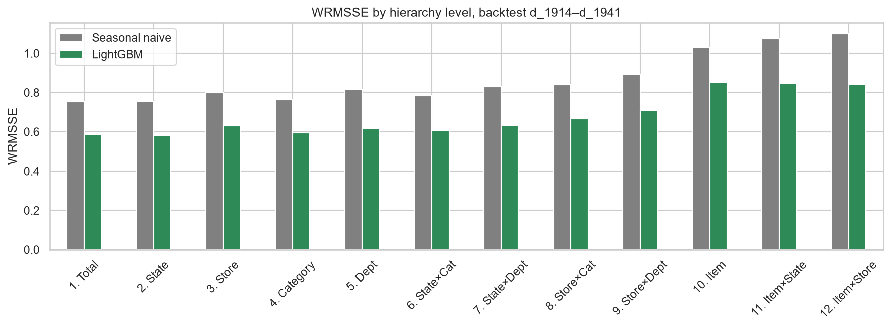
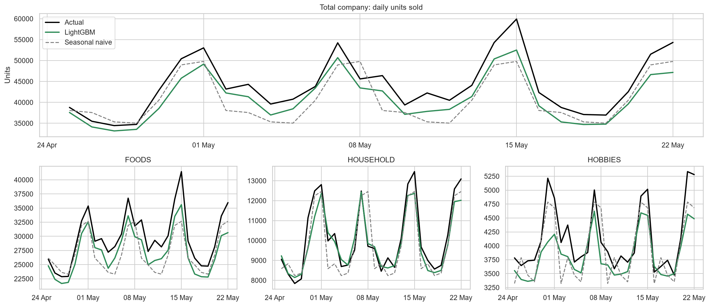
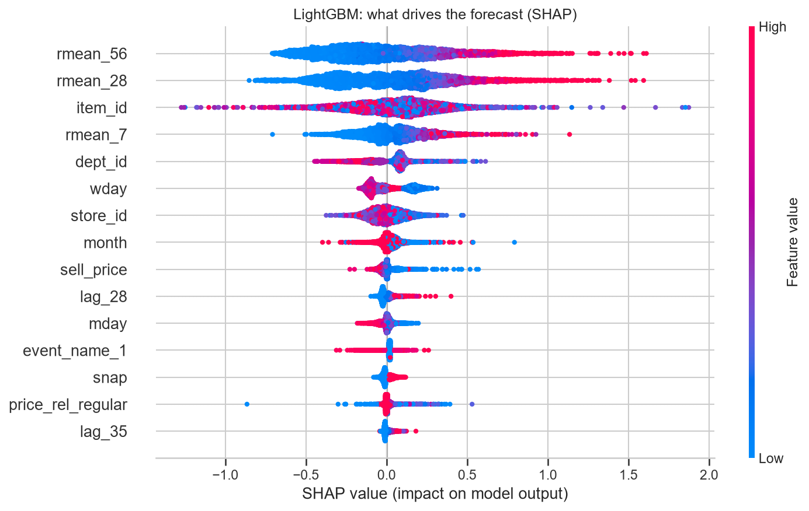

โจทย์: พยากรณ์ยอดขายสินค้าของ Walmart ล่วงหน้า 28 วัน โดยพยากรณ์ในระดับ สินค้า × สาขา (รวม 30,490 รายการ) เพื่อใช้ช่วยตัดสินใจเรื่องการสั่งสินค้า — ถ้าพยากรณ์ต่ำเกินไปจะทำให้สินค้าขาดสต็อกและเสียโอกาสขาย ถ้าพยากรณ์สูงเกินไปจะทำให้สินค้าล้นสต็อก เสียพื้นที่เก็บและต้นทุนจม การพยากรณ์ที่แม่นยำขึ้นจึงแปลเป็นมูลค่าทางธุรกิจได้โดยตรง
ขอบเขตข้อมูล: ใช้ข้อมูลยอดขายจริงของสินค้า 3,049 รายการ ใน 10 สาขา (California, Texas, Wisconsin) ย้อนหลังกว่า 5 ปี (29 มกราคม 2011 – 22 พฤษภาคม 2016) พร้อมข้อมูลราคาขายและปฏิทินเทศกาล/วันช่วยเหลือค่าอาหาร ทำให้มองเห็นทั้งพฤติกรรมระยะยาวและปัจจัยระยะสั้นที่กระทบยอดขาย
แนวทางการทำงาน: โครงการนี้แบ่งเป็น 4 ขั้นตอนต่อเนื่องกัน (1) เตรียมข้อมูลดิบให้อยู่ในรูปแบบที่วิเคราะห์ได้ (2) สำรวจข้อมูลเพื่อหาปัจจัยที่ขับเคลื่อนยอดขาย (3) แปลงปัจจัยเหล่านั้นเป็นตัวแปรสำหรับโมเดล และ (4) เทรนและเปรียบเทียบ แบบจำลองหลายแบบ แล้วทดสอบความแม่นยำย้อนหลังก่อนนำไปพยากรณ์อนาคตจริง รายงานฉบับนี้เรียงตามลำดับขั้นตอนดังกล่าว
ข้อมูลมาจาก Walmart ครอบคลุมสินค้า 3,049 รายการ ใน 10 สาขา (3 รัฐ: California, Texas, Wisconsin) ช่วงเวลา 29 มกราคม 2011 – 22 พฤษภาคม 2016 (รวม 1,969 วัน) ประกอบด้วยไฟล์ดิบ (raw data) ดังนี้
| ไฟล์ | เนื้อหา | จำนวนแถว | จำนวนคอลัมน์ |
|---|---|---|---|
sales_train_evaluation.csv |
ยอดขายรายวัน (หน่วย: ชิ้น) ของสินค้า × สาขา ตั้งแต่ d_1 ถึง d_1941 — ไฟล์หลักที่ใช้เทรนโมเดล | 30,490 | 1,947 |
sales_train_validation.csv |
ยอดขายชุดเดิมแต่สั้นกว่า (ถึง d_1913) ใช้สำหรับตรวจสอบผลช่วงแรกของการแข่งขัน | 30,490 | 1,919 |
calendar.csv |
ปฏิทิน: วันที่, วันในสัปดาห์, เดือน, เทศกาล/วันหยุด (event), วัน SNAP ของแต่ละรัฐ | 1,969 | 14 |
sell_prices.csv |
ราคาขายของสินค้าแต่ละรายการในแต่ละสาขา แยกตามสัปดาห์ (wm_yr_wk) | 6,841,121 | 4 |
sample_submission.csv |
รูปแบบไฟล์คำตอบตัวอย่าง (ใช้อ้างอิงรูปแบบการส่งผลพยากรณ์) | 60,980 | 29 |
หมายเหตุ: SNAP คือโครงการช่วยเหลือค่าอาหารของรัฐบาลสหรัฐฯ (คล้ายคูปองอาหาร) แต่ละรัฐมีวัน SNAP ของตัวเอง ซึ่งมักทำให้ยอดขายสูงกว่าปกติ
ข้อมูลดิบทั้ง 3 ไฟล์ (sales, calendar, prices) มีรูปแบบต่างกันและต้องเชื่อมกันก่อนใช้งาน
จึงเขียนสคริปต์ src/data.py เพื่อแปลงข้อมูลเป็นตาราง long format
(1 แถว = สินค้า 1 รายการ ในสาขา 1 แห่ง ใน 1 วัน) ที่รวมทุกอย่างไว้ในที่เดียว ได้แก่
data/processed/m5_long.parquet, ~60 ล้านแถว) เพื่อให้โหลดและประมวลผลได้เร็วกว่าอ่าน CSV ใหม่ทุกครั้งตารางนี้เป็นฐานข้อมูลเดียวที่ใช้ต่อทั้งขั้นตอนวิเคราะห์ข้อมูล (EDA) และขั้นตอนสร้าง feature สำหรับโมเดล
ก่อนสร้างโมเดล ได้วิเคราะห์ข้อมูลดิบเพื่อหาปัจจัยที่ส่งผลต่อยอดขาย โดยไล่จากภาพรวมทั้งบริษัท ลงไปจนถึงสินค้ารายตัว


California เป็นรัฐที่มียอดขายมากที่สุด (มี 4 สาขา) ขณะที่ Texas และ Wisconsin มีรัฐละ 3 สาขา ขนาดของแต่ละสาขาต่างกันมากแม้อยู่ในรัฐเดียวกัน จึงควรพยากรณ์และวางแผนแยกรายสาขา ไม่ใช้นโยบายเดียวกันทุกที่

สินค้าหมวด FOODS มีสัดส่วนยอดขายสูงสุด รองลงมาคือ HOUSEHOLD และ HOBBIES ตามลำดับ แต่ละหมวดมีพฤติกรรมการขายต่างกัน

สินค้าจำนวนมากมียอดขาย เป็น 0 บ่อยครั้ง (ขายช้า/ขายไม่สม่ำเสมอ) ทำให้การพยากรณ์ต้องรับมือกับข้อมูลที่เป็นศูนย์จำนวนมาก ซึ่งส่งผลต่อการเลือกวิธีวัดผลและชนิดของโมเดลในขั้นถัดไป
โมเดลไม่สามารถอ่าน "ตารางยอดขาย" ได้โดยตรง ต้องแปลงข้อมูลดิบให้เป็นตัวแปร (feature) ที่บอกสถานการณ์ของสินค้าแต่ละรายการในแต่ละวัน โดยออกแบบ feature ทุกตัวให้สอดคล้องกับ insight ที่พบในขั้นตอนก่อนหน้า
| กลุ่ม Feature | ตัวอย่าง | ความหมาย | มาจาก Insight |
|---|---|---|---|
| ยอดขายในอดีต (lag) | lag_28 ... lag_56 | ยอดขายเมื่อ 28–56 วันก่อน | รูปแบบซ้ำรายสัปดาห์ |
| ค่าเฉลี่ยเคลื่อนที่ (rolling) | rmean_7, rmean_28, rmean_56 | ยอดขายเฉลี่ย 7/28/56 วัน (นับถอยหลังจาก 28 วันก่อน) | ระดับยอดขายปกติและแนวโน้ม |
| ราคา | sell_price, price_rel_regular, price_change_7d | ราคาปัจจุบัน / เทียบราคาปกติ / การเปลี่ยนแปลงราคารายสัปดาห์ | ลดราคาแล้วขายดีขึ้น |
| ปฏิทิน | wday, month, mday | วันในสัปดาห์ เดือน วันที่ | เสาร์-อาทิตย์ขายดีกว่า |
| Event / SNAP | event_name_1, event_type_1, snap | เทศกาล / วันที่เป็นวัน SNAP ของรัฐนั้น | ยอดขายเปลี่ยนในวันเทศกาลและวัน SNAP |
| รหัสสินค้า/สถานที่ | item_id, dept_id, cat_id, store_id, state_id | สินค้าอะไร อยู่สาขาไหน | แต่ละสาขาและหมวดขายต่างกัน |
เป้าหมายคือพยากรณ์ล่วงหน้า 28 วัน พร้อมกันในครั้งเดียว ถ้าใช้ยอดขายของ "เมื่อวาน" เป็น feature จะพยากรณ์ได้แค่วันแรกเท่านั้น เพราะวันที่ 2–28 ยังไม่มีข้อมูลยอดขายของวันก่อนหน้าจริง ๆ การใช้ข้อมูลย้อนหลังที่เก่ากว่า 28 วันทำให้ทุกวันในช่วงพยากรณ์มี feature ครบ วิธีนี้เรียกว่า direct forecasting ข้อดีคือ error จากการพยากรณ์วันก่อนหน้าจะไม่สะสมไปยังวันถัดไป

การพยากรณ์ยอดขายมีความท้าทายเฉพาะตัวที่ทำให้ตัวชี้วัด error แบบธรรมดา (เช่น RMSE) ไม่เหมาะสมนัก จึงใช้ตัวชี้วัดชื่อ WRMSSE (Weighted Root Mean Squared Scaled Error) ซึ่งออกแบบมาเพื่อแก้ปัญหา 3 เรื่องนี้โดยเฉพาะ (ค่ายิ่งต่ำยิ่งดี):
จำลองสถานการณ์ย้อนหลัง โดยเทรนโมเดลด้วยข้อมูลถึงวันหนึ่ง แล้วพยากรณ์ 28 วันถัดไปซึ่งรู้คำตอบจริงอยู่แล้ว เพื่อเปรียบเทียบกับยอดขายจริง ห้ามสุ่มแบ่งข้อมูล เพราะจะกลายเป็นใช้ข้อมูลอนาคตมาทายอดีต

ใช้โมเดลตระกูลต้นไม้ตัดสินใจ (tree-based) เป็น global model เดียวที่เรียนรู้จากสินค้าทุกรายการพร้อมกัน (ไม่แยกเทรนทีละสินค้า เพราะสินค้าส่วนใหญ่ขายช้า ข้อมูลจะไม่พอถ้าแยกโมเดล)
| โมเดล | หลักการ | เหตุผลที่เลือก |
|---|---|---|
| LightGBM | Gradient boosting: สร้างต้นไม้ทีละต้น แต่ละต้นแก้ error ของต้นก่อนหน้า | เร็วที่สุดเมื่อข้อมูลมีหลายล้านแถว |
| XGBoost | Gradient boosting เช่นกัน แต่วิธีสร้างต้นไม้ต่างจาก LightGBM | แม่นและเสถียร ใช้เทียบกับ LightGBM |
| CatBoost | Gradient boosting ที่จัดการตัวแปรประเภทหมวดหมู่ (categorical) ได้เอง | ไม่ต้องแปลงรหัสสินค้า/สาขาเอง |
| Random Forest | สร้างต้นไม้หลายต้นอย่างอิสระแล้วเฉลี่ยผลลัพธ์ | เข้าใจง่าย ใช้เทียบฝั่ง bagging |
โมเดลตระกูล boosting ใช้ Tweedie loss ซึ่งเหมาะกับยอดขายที่มีค่า 0 บ่อยครั้ง (ตามที่พบใน insight ข้อ 4.4) และเปรียบเทียบกับวิธี baseline 3 แบบ ได้แก่ Naive, Seasonal naive และ Mean 28 วัน เพื่อตรวจสอบว่าโมเดล ML คุ้มค่าที่จะใช้จริงหรือไม่
ผลจาก backtest 1 รอบ (เทรนด้วยข้อมูลถึง d_1913 แล้ววัดผลกับ d_1914–d_1941) เรียงจาก WRMSSE ต่ำสุด (ดีที่สุด) ไปสูงสุด:
| วิธี | WRMSSE (รวม) | FOODS | HOUSEHOLD | HOBBIES | Bias (%) | เวลาเทรน (นาที) |
|---|---|---|---|---|---|---|
| LightGBM ★ เลือกใช้ | 0.681 | 0.730 | 0.583 | 0.739 | -6.9 | 21.4 |
| XGBoost | 0.705 | 0.743 | 0.614 | 0.780 | -7.0 | 8.5 |
| Random Forest | 0.711 | 0.751 | 0.682 | 0.691 | -4.3 | 1.4 |
| Seasonal naive (baseline) | 0.870 | 0.954 | 0.760 | 0.806 | -7.4 | ~0 |
| CatBoost | 1.007 | 1.021 | 0.963 | 1.015 | -10.2 | 20.8 |
| Mean 28d (baseline) | 1.082 | 1.116 | 1.068 | 0.941 | -3.9 | ~0 |
| Naive (baseline) | 1.464 | 1.388 | 1.703 | 1.275 | +13.2 | ~0 |
WRMSSE: ยิ่งต่ำยิ่งดี | Bias: ลบ = พยากรณ์ต่ำกว่าจริง (เสี่ยงของขาด), บวก = พยากรณ์สูงกว่าจริง (เสี่ยงของล้น)




ผลลัพธ์ในรายงานฉบับนี้เป็นเพียงจุดเริ่มต้น ขั้นตอนถัดไปที่วางแผนไว้เพื่อทำให้ผลงานนำไปใช้ตัดสินใจทางธุรกิจได้จริง มีดังนี้
| # | ขั้นตอน | รายละเอียด |
|---|---|---|
| 1 | แปลผลการพยากรณ์เป็นมูลค่าทางธุรกิจ | ประเมินว่าความแม่นยำที่เพิ่มขึ้นจากโมเดลช่วยลดต้นทุนด้านสต็อกได้เท่าไร และบริหารสต็อกแยกตามกลุ่มสินค้าจะช่วยประหยัดเพิ่มได้อีกหรือไม่ |
| 2 | ตรวจหาสินค้าที่น่าจะขาดสต็อก | ค้นหาช่วงเวลาที่สินค้าซึ่งปกติขายดีจู่ ๆ มียอดขายเป็นศูนย์ติดต่อกันหลายวันทั้งที่ยังวางขายอยู่ แล้วประเมินว่าความผิดปกตินั้นเกิดขึ้นเองตามธรรมชาติได้ยากเพียงใด เพื่อแยกแยะว่าน่าจะเกิดจากของหมดสต็อกมากกว่าความต้องการที่ลดลงจริง |
| 3 | จัดกลุ่มสินค้าเชิงกลยุทธ์ | แบ่งสินค้าตามความสำคัญทางรายได้ และความยากง่ายในการพยากรณ์ของแต่ละรายการ เพื่อกำหนดแนวทางบริหารสต็อกและความถี่ในการตรวจสอบที่เหมาะกับแต่ละกลุ่มแตกต่างกัน |
| 4 | วิเคราะห์ผลของเทศกาลและวันช่วยเหลือค่าอาหารให้ละเอียดขึ้น | สรุปว่าช่วงเวลาใด หมวดสินค้าใด และพื้นที่ใดที่ยอดขายเพิ่มขึ้นชัดเจน พร้อมระยะเวลาที่ยอดขายเริ่มขยับก่อนถึงวันสำคัญ เพื่อให้วางแผนสั่งสินค้าล่วงหน้าได้แม่นยำขึ้น |
| 5 | สรุปข้อเสนอแนะเชิงธุรกิจและเผยแพร่ผลงาน | รวบรวมผลลัพธ์ทั้งหมดให้อยู่ในรูปข้อเสนอแนะที่นำไปปฏิบัติได้จริง พร้อมเผยแพร่ข้อมูล โค้ด และรายงานให้ผู้เกี่ยวข้องตรวจสอบและต่อยอดได้ |